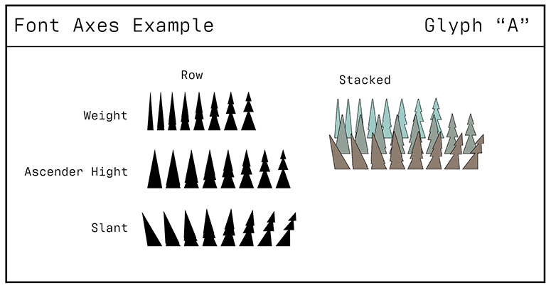

Varial Type Data Visualizer (Prototype 0.1)
Testing axes (Width, Ascender and Slant) on capital B.
B
B
B
B
Example visualisation
Axes of the glyph:
Weight: Fire impact
Ascender: Growth
Slant: Permafrost Impact
Axes of the glyph:
Weight: Fire impact
Ascender: Growth
Slant: Permafrost Impact

Display of possible states
What’s next
- Further development of the font
- Ability to upload CSV and create own charts
- Different export formats: svg, png

Screenshot of the glyph from the glyphs.app